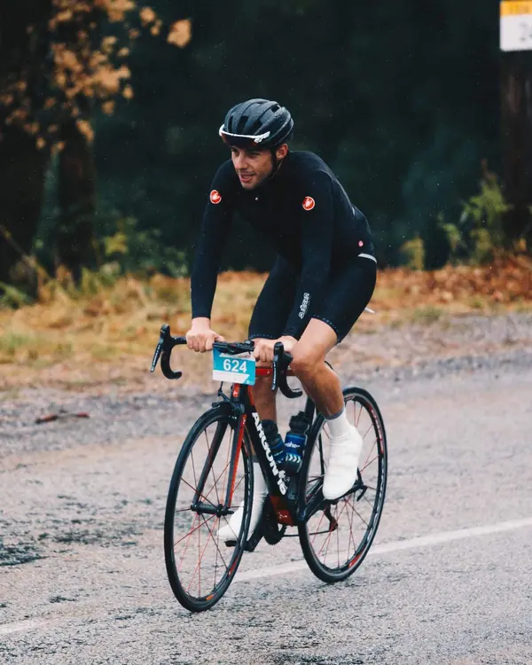
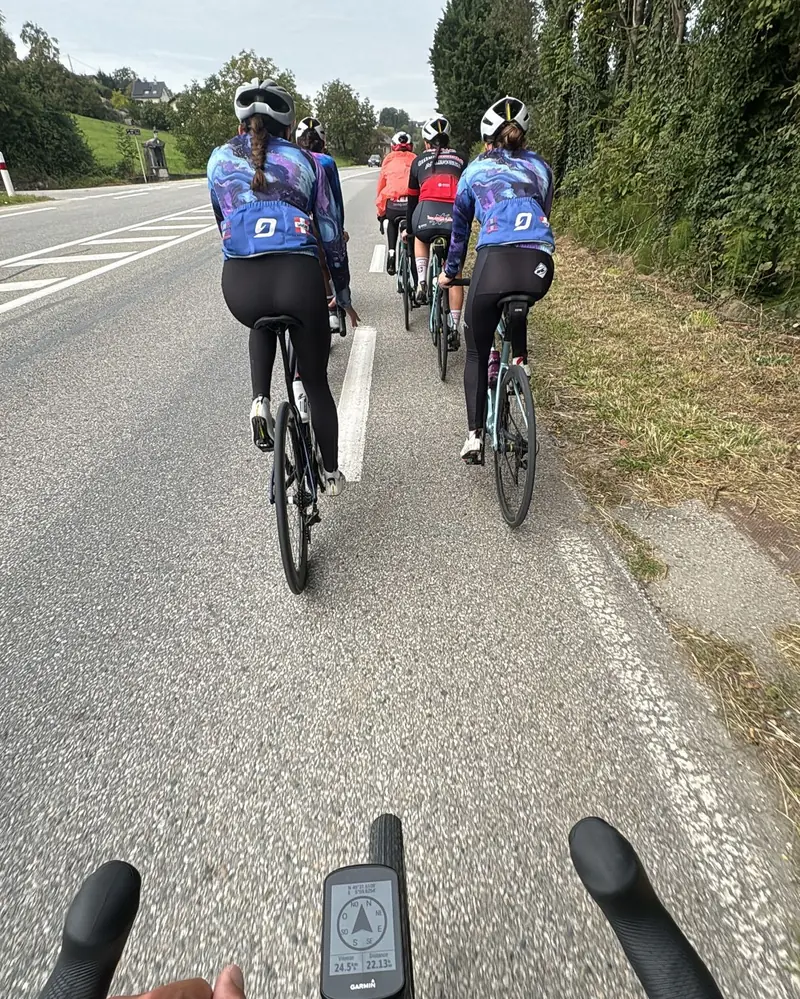
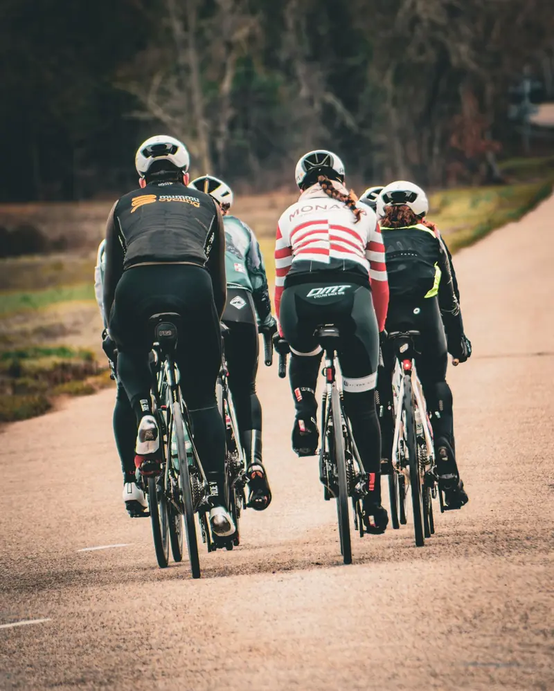
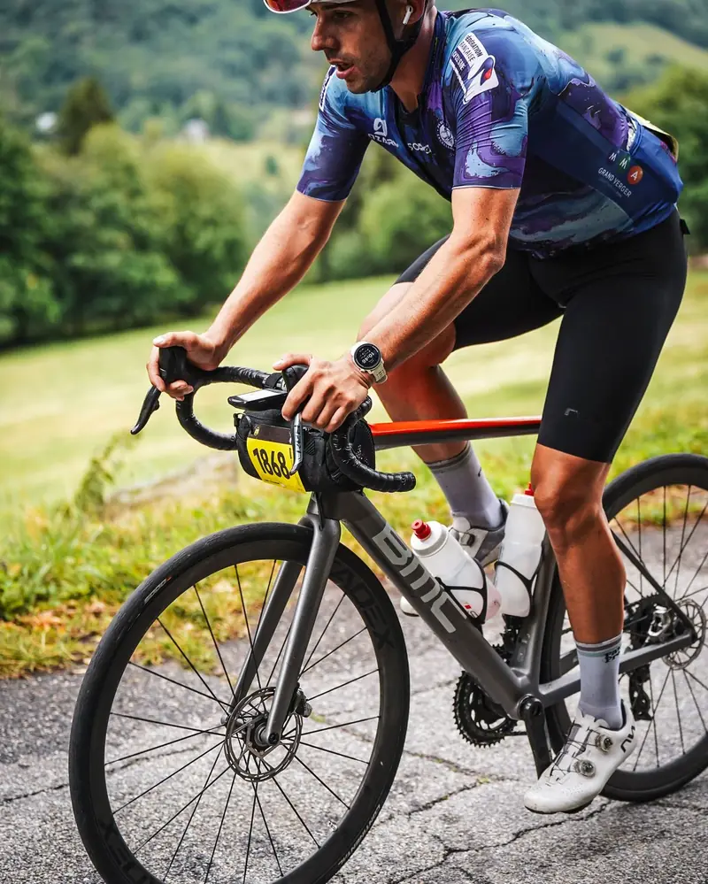
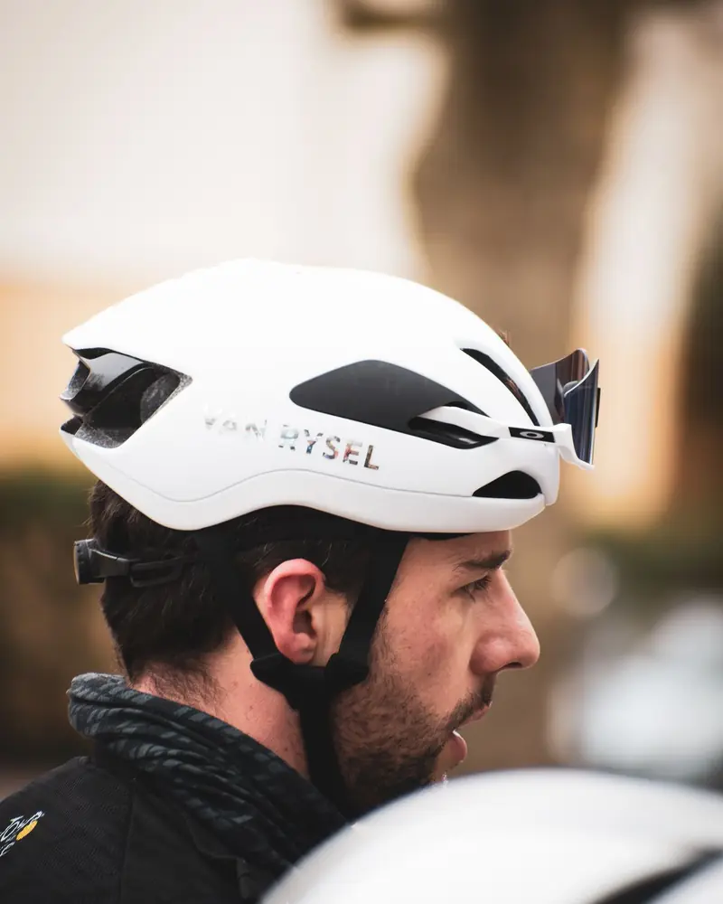
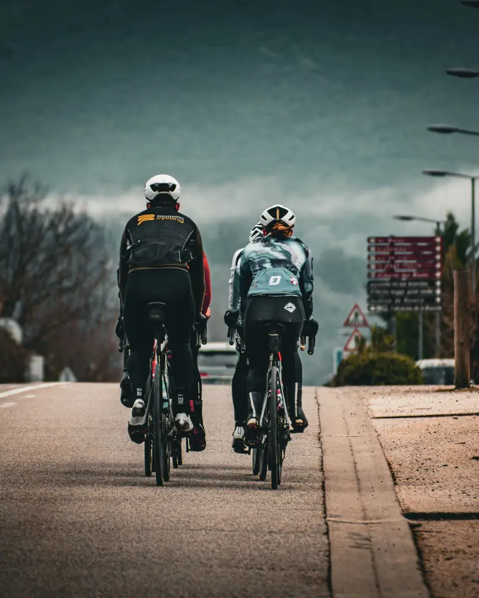
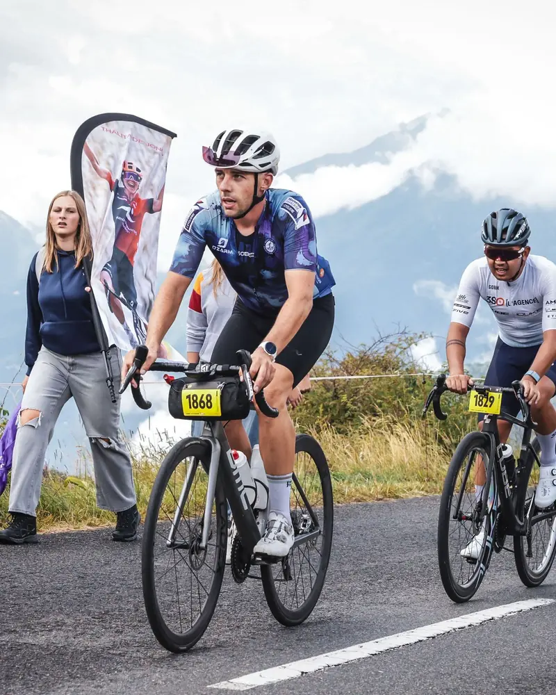
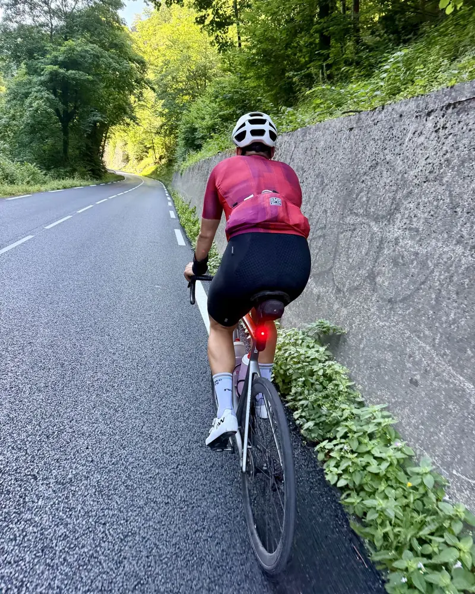
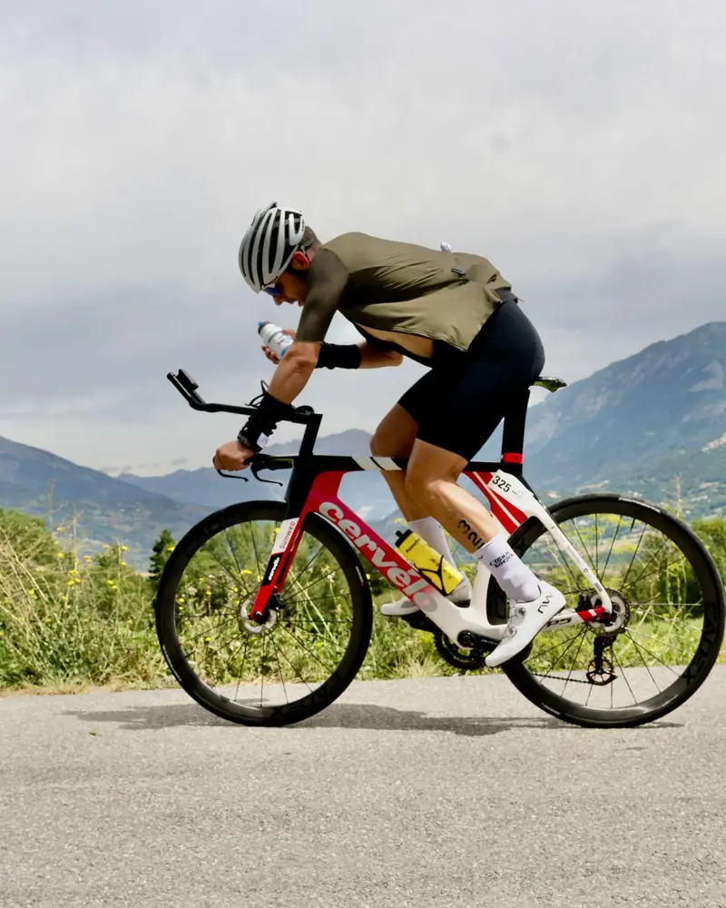

Un premier échange
Ton niveau, ton historique, ton objectif et le temps que tu as vraiment. Gratuit et sans engagement.
Coach à Chambéry et en ligne
Un plan individualisé sur Nolio, construit et ajusté chaque semaine par un entraîneur diplômé d’État. Un groupe restreint d’athlètes, pour un vrai suivi.
20 athlètes maximum suivis sur l’année
Premier échange gratuit et sans engagement.Ton niveau, ton historique, ton objectif et le temps que tu as vraiment. Gratuit et sans engagement.
Des séances structurées, envoyées sur ta montre ou ton compteur, placées les jours où tu peux t’entraîner.
J’analyse ce que tu as vraiment fait et j’adapte la suite. Une séance ratée ne ruine pas ta prépa.

Entraîneur au club Chambéry Triathlon et au Pôle Espoir féminin de Chambéry. Ancien cycliste de 1re catégorie, deux fois finisher de l’Embrunman, plus de 15 Half Ironman et 2h50 au marathon.
Chaque plan est écrit et ajusté par lui, à partir de tes données : puissance, fréquence cardiaque et VFC.
Découvrir les formules →







Tout se fait en ligne sur Nolio. On commence par un premier échange gratuit, puis je construis ton plan. Tes séances arrivent sur ta montre, tu t’entraînes, j’analyse et j’ajuste.
D’une montre ou d’un compteur Garmin, Suunto, Coros ou Polar : tes séances s’y synchronisent automatiquement. Pour la formule Cyclisme, un capteur de puissance permet le test d’évaluation.
Oui. Mathieu n’avait jamais couru plus de 10 km ni nagé 200 m sans pause : il a terminé son premier Ironman en 11h17 après 9 mois de préparation.
20 maximum sur l’année, volontairement. C’est ce qui me permet un suivi très individualisé et des réponses rapides.
De 70 € à 150 € par mois selon la formule (course à pied, cyclisme ou triathlon). Le premier échange est gratuit et sans engagement.
Oui, 3 mois au départ : c’est le temps de faire tes tests, de construire ton plan et de voir les premiers progrès. Ensuite, le suivi continue de mois en mois et tu peux arrêter quand tu veux en me prévenant un mois avant.
Appelle-moi ou écris-moi ton objectif et ton niveau, je te réponds personnellement.
Coaching
Course à pied, vélo ou triathlon : un plan personnalisé sur Nolio, synchronisé sur ta montre (Garmin, Suunto, Coros, Polar).
Le diplôme d’État de référence pour entraîner en triathlon. Un coaching construit sur une vraie formation, pas sur des recettes trouvées sur internet. Entraîneur au club Chambéry Triathlon.
Carte professionnelle n° 07326ED0063 · vérifier sur sports.gouv.fr ↗70 € / mois
Structure et optimise ton entraînement selon ton profil, du 10 km au marathon.
120 € / mois
Ton entraînement vélo piloté par la puissance.
150 € / mois
Pour préparer ton triathlon, du premier sprint à l’Ironman.
Choisis ta formule et écris-moi sur WhatsApp au 06 21 34 92 26 : le premier échange est gratuit et sans engagement. Le suivi se fait ensuite sur Nolio, avec un engagement de 3 mois au départ, puis de mois en mois.
Calculateur
Quelques mesures et tu obtiens un point de départ pour régler ton vélo. Ensuite, une photo de profil sur home-trainer permet de vérifier tes angles.
Entrejambe : pieds nus, dos au mur, un livre bien calé entre les jambes comme une selle. Mesure du sol au haut du livre.
Installe ton vélo sur home-trainer et vérifie qu’il est de niveau : l’axe de la roue avant doit être à la même hauteur que l’axe de la roue arrière. Mesure du sol à chaque axe et cale la roue avant si besoin. Mets ton cuissard et tes chaussures de vélo.
Prévois une clé Allen, un mètre, un niveau à bulle et un fil à plomb (une ficelle avec un écrou au bout suffit). Vérifie que tes cales sont bien réglées : l’axe du gros orteil doit tomber sur le milieu de la cale, qui est marqué dessus.
Pose une surface plate et rigide sur la selle, comme une planche ou une règle, de l’arrière jusqu’à la pointe. Pose ton niveau (ou l’appli niveau de ton téléphone) sur la planche. Règle la selle légèrement basculée vers l’avant, de 2 à 3°. Jamais la pointe vers le haut.
Assieds-toi au fond de la selle, comme quand tu roules, mains sur les cocottes. Mets les manivelles à l’horizontale (pédale avant à 3 h) et garde le pied à plat.
Pose le fil à plomb juste sous la rotule, sur l’os du devant du genou. Le fil doit tomber dans l’axe de la pédale.
Déplace la selle sur ses rails par 3 à 5 mm, resserre, et recontrôle.
Mesure du centre de l’axe du pédalier jusqu’au haut de la selle, en suivant le tube de selle. Règle-la sur — cm (valeur A calculée plus haut).
Vérifie au talon : manivelle en bas (6 h), pose le talon sur la pédale. La jambe doit être tendue, sans que le bassin bascule. En pédalant normalement, le genou reste alors légèrement fléchi en bas du coup de pédale.
Corrige par 2 à 3 mm à la fois.
Monter ou descendre la selle déplace légèrement ton genou. Refais le fil à plomb de l’étape 3, et ajuste le recul si besoin. Puis revérifie la hauteur : deux allers-retours suffisent en général.
Une fois la selle réglée, ne la touche plus. Ajuste la distance selle → cintre (B) avec la longueur de potence et le drop (C) avec les bagues sous la potence, selon les valeurs calculées plus haut.
Termine en te filmant de profil et en vérifiant tes angles juste en dessous.
Filme-toi de profil sur home-trainer, à ton allure d’endurance. Choisis ta vidéo, arrête-la au bon moment et mesure tes angles directement ici, du bout du doigt. Tu peux aussi les entrer à la main.
Filme-toi de profil sur home-trainer, le corps en entier, pendant 10 secondes. Choisis ensuite la vidéo (ou une photo) : elle reste sur ton téléphone.
Ces calculs donnent un point de départ. Envoie-moi ta vidéo et on affine ta position ensemble. En cas de douleur, consulte d’abord un médecin ou un kinésithérapeute.
Envoie-moi ta vidéo sur WhatsAppCalculateur
Entre tes chiffres de test : l’app calcule tes allures, tes zones cardiaques et tes zones de puissance. Tout est gardé sur ton téléphone.
Pas de VMA ? Calcule-la depuis une course récente en bas de page.
Estimation à partir de % de VMA usuels. L’endurance de chacun fait varier ces chiffres.
FTP ≈ 95 % de ta puissance moyenne sur 20 min à fond, après un bon échauffement.
Zones de Coggan, en % de FTP.
Test CSS : 400 m à fond, récupération complète, puis 200 m à fond.